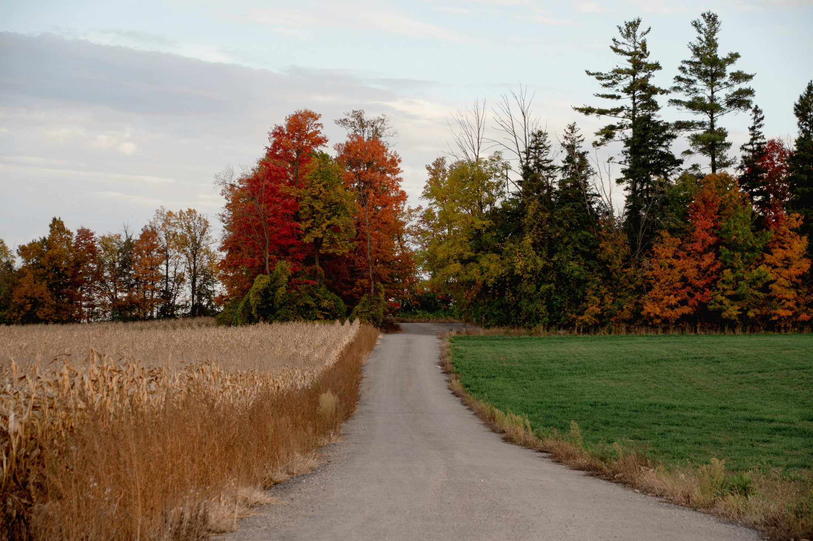

Real photos + shot ideas
Gallery & Photo Locations

Sandbanks · Local image / Unsplash credit in assets/images/PHOTO_CREDITS.md

Country Road · Local image / Unsplash credit in assets/images/PHOTO_CREDITS.md
Sandbanks · Local image / Unsplash credit in assets/images/PHOTO_CREDITS.md
Country Road · Local image / Unsplash credit in assets/images/PHOTO_CREDITS.md
Sandbanks · Local image / Unsplash credit in assets/images/PHOTO_CREDITS.md
Photo sourcing note: Photos are web-hosted references with visible source notes. Before final publishing, we can replace these with your own photos from trips.